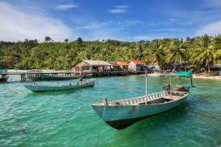
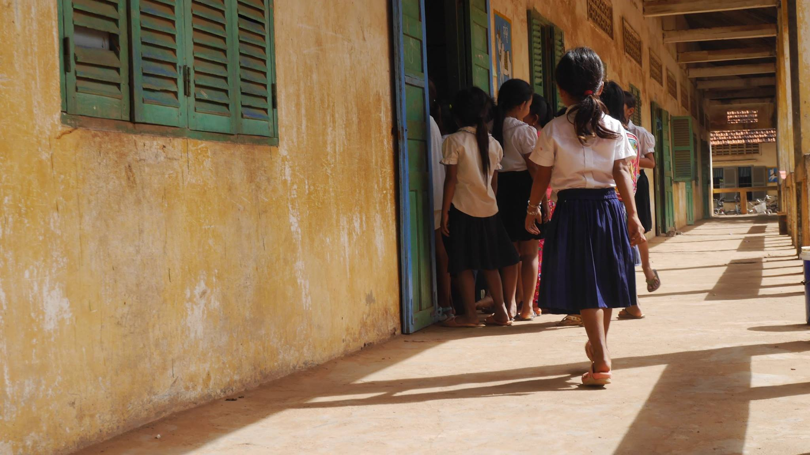

L’histoire de 5 étudiants qui ont voyagé pendant leur césure durant leur étude. C’est en voyageant, qu’ils ont réellement pris conscience des différentes problématiques présentes sur Terre tels que la pauvreté, le manque d’éducation, les problèmes d’hygiènes et de la santé touchés par de nombreux pays.
Ils ont analysé les besoins et ont décidé de créer une association pour aider ces pays, soutenir divers causes et développer des projets.
L'association SOLIDACT est une ORGANISATION DE SOLIDARITE INTERNATIONALE loi de 1901 à but non lucratif créée pour mener des programmes de développement auprès des enfants les plus vulnérables dans une multitude de pays
Le Cambodge
Depuis les accords de paix d’octobre 1991, en dépit d’aides extérieures significatives, le décollage du Cambodge s’est heurté à un certain nombre de difficultés liées à une forte poussée démographique, à un environnement économique national post-conflictuel et sous-régional fragile ainsi qu’aux aléas de la vie politique agitée d’une démocratie naissante. Dans l’ensemble des secteurs d’activité, le Cambodge a été confronté à une problématique de développement qui a conduit délibérément vers le modernisme un pays tout entier, alors que sa population, ancrée dans la culture khmère et les traditions, vivait avec des revenus de subsistance voisins de la pauvreté.
La jeunesse cambodgienne est aujourd’hui encore victime d’un contexte qu’elle vit avec difficulté. Exclus prématurément de l’école par manque de performance du système éducatif (un enfant sur deux quitte l’école avant la fin du cycle primaire), de nombreux adolescents se retrouvent dans la rue, souvent analphabètes ou illettrés, attirés par la ville, sans avoir été préparés à la vie active et encore moins familiarisés à l’exercice des métiers urbains. Le Cambodge reste en effet un pays rural où les rizières occupent environ 20 % des terres. La population des campagnes représente plus de 80 % de la population totale et dans certaines zones éloignées ou défavorisées, le taux de scolarisation ne dépasse pas 30 %.
C'est pourquoi Solidact a décidé d’intervenir dans ce pays, notamment dans les villages défavorisées et ruraux. Nous avons décidé de mener divers plans d’actions en suivant des objectifs précis :
Inciter les parents à scolariser leur enfant
Soutenir les écoles à enseigner avec un programme de qualité
Suivre l’évolution des jeunes en leur assurant un encadrement
Fournir des équipement sportifs et éducatifs
BANLUNG
Banlung est la capitale de la province de Rotanah Kiri au nord-est du Cambodge.
KOKIR
Kokir est une ville du Cambodge de plus de 17 000 habitants.

KEP
Kep ou Kep-sur-Mer au temps du protectorat est une municipalité.
ANGKOR
Angkor est un site archéologique du Cambodge.
Donner pour L'Inde
...
L'Inde
Depuis le 01 avril 2010, l'Inde a adopté une loi sur le Droit à l'éducation garantissant à chaque enfant de 6 à 14 ans le droit à un enseignement gratuit et obligatoire.
Cette loi vise à assurer que dans la mesure du possible , les gouvernements des Etats indiens offrent une scolarisation publique à tous les enfants. Mais elle oblige aussi les écoles privées à réserver un quart de leurs places pour les enfants de familles pauvres et de castes inférieurs.
Cependant, cette loi présente déjà plusieurs défauts comme- un des grands problème du système public est l'absentéisme des enseignants qui est très élevé. Actuellement, des millions d'enfants finissent leur scolarité du primaire sans être capable de lire de courts paragraphes ou de faire des additions toutes simples. Or, cette nouvelle loi ne parle que de l'accès aux écoles. Cette loi offre ainsi un droit à la scolarisation et non à l'éducation !!
SOLIDACT agit !
Auprès des enseignants
Nous recrutons et suivons les enseignants afin qu’ils puissent donner des cours de qualité et qu’ils s’impliquent dans leur métier.

Auprès des jeunes
Nous leur fournissons du matériel scolaire, améliorons et construisons des infrastructures en faveur de leur apprentissage scolaire.
Donner pour L'Inde
...
Deviens bénévole !
Si toi aussi tu es touché par les divers causes que nous défendons et que tu as envie de développer des projets : rejoins nous !
Envoie nous ton CV et ta lettre de motivation à contact@solidact.fr